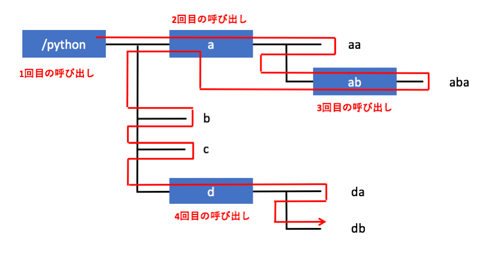

関数の高度な使い方
概要
本章では関数の高度なトピックについて扱います。 正直なところ本章の内容は初心者にはかなり難しいのですが、 Pythonの初心者であっても既存ライブラリなどを利用する場面は多くあるため、 「こういう機能がある」というレベルでは知っておいたほうがいいです。 本トピックは下編で扱うか悩んだのですが、難易度が高いわりに利用する頻度が高いためここで扱わせていただきます。 難しければ斜め読みしていただき、ある程度 Python のプログラムが書けるようになってから読み直してみて下さい。
関数内の関数
Python の関数は実は関数の中に入れ子構造にすることができます。 例えば以下のような使い方ができます。
def test1(): a = 10 def test2(x, y): return x + y return a + test2(5, 6) print(test1()) # 21
上記の例では関数 test1() の中で関数 test2() を定義し、それを使っています。 今回のサンプルのような短い関数であればこのような使い方は不要ですが、 より複雑な処理を関数で行う場合は処理を綺麗に分類するために内部で関数を定義して使うことがあります。
関数オブジェクト
先程もお伝えしましたがPython は関数自体もオブジェクトです。 そのため、変数に関数を代入し、それを利用することができます。
def test1(): print('test1') a = test1 a() # test1
変数に代入できるということは関数の引数として使えるということです。 詳細は中編にて取り扱いますが、関数を使う関数である高階関数というものもあります。
def apply_list(fun, list_): for i in list_: fun(i) def print_double(x): print(x * 2) list_ = [1,2,3,4,5] apply_list(print_double, list_) # 2 # 4 # 6 # 8 # 10
位置引数とキーワード引数
関数の引数の使い方については既に何度も説明しています。 例えば以下の関数があるとしましょう。
def test(a, b, c): print(a) print(b) print(c)
この関数は引数として a, b, c を受け取ります。 この関数を呼び出す際に a, b, c に対応した順序で引数を与えます。
test(1,2,3) # 1 # 2 # 3
出力をみると分かりますが呼び出しの引数の順序と関数の定義の引数の順序が合致していることが分かります。 このように関数の引数をその位置を使って指定することから、このような引数の使い方を「位置引数」と呼んでいます。
実は関数の引数は位置引数以外に「キーワード引数」と呼ばれる使い方ができます。 具体的には関数を呼び出す際に仮引数(定義された引数名)に対して実引数を与えるとキーワード引数として使われます。 具体的には以下の様な使い方です。
def test(a, b, c): print(a) print(b) print(c) test(b='B', c='C', a='A') # A # B # C
関数の定義自体は最初の例と全く代わりませんが、呼び出し時に「b=’B’」といった形で値を与えています。 指定する引数の順番としては b, c, a なのですが、 呼び出し側では定義された順序の a, b, c で解釈されていることが分かります。 位置で引数を指定するのではなく、引数名という「キーワード」で引数を指定するのでキーワード引数と呼ばれています。 今回のようなシンプルな関数の定義だとキーワード引数で呼び出す必要はありませんが、 次に説明する「デフォルト引数を使う関数」や 「キーワード引数を使うことを前提に定義された関数」を使う関数を使う場合に利用されます。
デフォルト引数
デフォルト引数は引数定義時にデフォルトの値を決めてしまい、 呼び出し時に対応する引数が与えられなければデフォルト値が適用されるというものです。 デフォルト引数は関数定義の引数の箇所に「引数名 = 値」と定義することで実現できます。 以下にサンプルを記載します。
def test(a, b='B', c='C'): print(a) print(b) print(c)
引数 a,b,c を見ると、b と c にはデフォルト引数が定義されていることが分かります。 この関数を呼び出すときに引数を3つ与えればそれぞれ a, b, c に与えられますが、 それ未満の数で呼び出すと足りないぶんはデフォルト値が使われます。 以下にこの関数の利用例を示します。
test(1,2,3) # 1 # 2 # 3 test(1,2) # 1 # 2 # C test(1) # 1 # B # C
出力を見ると引数が足りない場合はデフォルト値が使われていることが分かります。 デフォルト値を使う場合に気をつけてほしいことは、 デフォルト引数は必ず引数の後部でなければならないということです。 例えば以下のような使い方はできません。
def test(a='A', b='B', c): print(a) print(b) print(c) # def test(a='A', b='B', c): # ^ #SyntaxError: non-default argument follows default argument
大量のデフォルト引数を持つ関数はキーワード引数との相性がいいです。例えば以下の例を見て下さい。
def test(a, b='B', c='C', d='D', e='E', f='F'): print(a) print(b) print(c) print(d) print(e) print(f) test('AA', d='DD') # AA # B # C # DD # E # F
上記サンプルの関数は非常に高度なもので、引数が6つとれるとしましょう。 ただ、細かい調整を引数で調整できるだけであり、最初の引数以外はそれほど重要でないとします。 全ての引数を指定するのは大変ですが、デフォルト引数の機能を使って必要な箇所のみピンポイントで指定し、 あとはデフォルト値を使うようにすれば呼び出しが簡単になります。
可変長引数
可変長引数は名前の通り「引数の長さ(数)が変わる」ということです。 先ほどのキーワード引数も良い出す際の引数の数はデフォルト値を使うか否かという観点では可変でした。 ただ、可変長引数はそれとは異なり「好きなだけ」関数の定義をすることができます。 可変長引数を使う際は、関数を定義する際に引数の前に「*」をつけます。 引数名はなんでもよいのですが、慣習的に args (日本語だと引数)といった名前を付けることが多いです。 読む人にとっても「これは可変長引数」と認識しやすいです。
def test(*args): print(type(args)) print(args) test(1) # <class 'tuple'> # (1,) test(1,2,3) # <class 'tuple'> # (1, 2, 3) test() # <class 'tuple'> # ()
上記のサンプルを見てもらうと分かるように可変長引数はタプルとして渡されています。 呼び出し時にあたえられる引数の数は任意の数が使え、0 であっても問題ありません。
定義する可変長引数の位置を調整することで必要最低限の引数の数が決まります。
例えば
def test(a, *args):
とした場合、最初に与えられた引数が a に入り、
のこりが args に入ります。そのため、最低一つの引数が必要です。
def test(a, *args): print(a) print(args) test(1) # 1 # () test(1,2,3) # 1 # (2, 3) test() # Traceback (most recent call last): # ... # TypeError: test() missing 1 required positional argument: 'a'
2つの引数が必要であれば
def test(a, b, *args):
とするなどして、
必要な数にマッチした関数の定義をしてください。
なんでも受け取るキーワード引数
位置指定引数のところで紹介したキーワード引数は関数の引数の順序を無視して呼び出す目的で使いました。
実はこのキーワード引数は自分が定義した引数以外にも使えます。
以下のサンプルで関数定義の際に
**kargs
という引数を使っています。
これを使うと定義されていないキーワード引数を辞書型として扱うことができます。
def test(**kargs): print(type(kargs)) print(kargs) test(a='A', hello=3) # <class 'dict'> # {'hello': 3, 'a': 'A'} test() # <class 'dict'> # {} test('A', 'B') # Traceback (most recent call last): # ... # TypeError: test() takes 0 positional arguments but 2 were given
上記の呼び出し結果と出力を見てもらうと分かりますが、
キーワード引数の引数名が辞書型の key になり、それに対応する値が value となっています。
**kargs
はあくまでもキーワード引数専用であるため、
キーワードを指定しない位置引数を使った呼び出しをするとエラーとなっています。
なお、kargs は keyword args の省略形であり、
先ほどの args と同様に慣習としてこの名前を使うことが多いです。
他の変数名も使えますがあえて使う理由もありません。
かなり高度な使い方となるのですが、可変長引数とキーワード引数を併用することで 「どんな引数でも使える関数」を定義することができます。
def test(*args, **kargs): print(args) print(kargs) test(1,2,3,a='A',b='B',c='C') # (1, 2, 3) # {'a': 'A', 'b': 'B', 'c': 'C'}
この使い方で便利なのは関数を「呼び出す」場合にも
*arg
と
**kargs
を使えるということです。
それをすると「受け取った引数をそのまま別の関数に渡す」ということができます。
以下のサンプルを見ると test2 関数が受け取った引数を test1 関数に丸投げしていることがわかります。
def test1(*args, **kargs): print('test1') print(args) print(kargs) def test2(*args, **kargs): print('test2') # 可変長引数とキーワード引数をそのまま呼び出す関数に渡す test1(*args, **kargs) test2(1,2,3,a='A',b='B',c='C') # test2 # test1 # (1, 2, 3) # {'a': 'A', 'b': 'B', 'c': 'C'}
今回は自分で作った test1 を呼び出していますが、たとえばここに既存の関数をいれることもできます。
def test(*args, **kargs): print('args: ', args) print('kargs: ', kargs) result = sum(*args, **kargs) print('result: ', result) return result result = test([1,2,3,4,5]) # sum([1,2,3,4,5]) print(result) # args: ([1, 2, 3, 4, 5],) # kargs: {} # result: 15 # 15
上記のサンプルは sum 関数になにを与えるかをリッチに出力させています。 面白いのは関数 sum はキーワード引数を受け取らないのに呼び出し時にそれを与えても問題が発生していないところかと思います。
再帰関数
再帰関数は自分自身を呼び出す関数です。 for や while 文でループ処理をしますが、再帰関数も似たように「同じ処理を何度も繰り返す」場面で使われます。 たとえば配列から一番大きな要素を取得する処理は以下のように書けます。
def get_max(list_, max_): # リスト長が0なら最大値を返す if(len(list_) == 0): return max_ # リストから値を取り出し最大値の更新 value = list_.pop() if(value > max_): max_ = value # 次のリストの要素をチェック。 return get_max(list_, max_) list_ = [5,9,10,3,5] max_ = get_max(list_, 0) print(max_) # 10
コメントを読んでもらうと何をやっているか分かるかと思いますが、 ようするにリストから1つの要素を取り出して、 それが現在の最大値より大きければ最大値を更新する作業を繰り返し実行しています。 関数が同じ関数をどんどん呼んでいき、深くまで戻っていくようなイメージです。 最終的に探索し終えたら、最大値を return 文で返し、深くもぐった関数呼び出しを今度は上に戻っていき、 最初の get_max 関数の呼び出しもとに値を返します。
はっきり言うとこのコードは悪い再帰関数です。 再帰関数としては分かりやすいのでとりあげたのですが、同じことを for 文で実現した以下のコードのほうがはるかに分かりやすいです。
list_ = [5,9,10,3,5] max_ = 0 for i in list_: if i > max_: max_ = i print(max_) # 10
このコードがどういう処理をしているかについてはあえて説明する必要はないと思います。
実はこの再帰関数なのですが、ループ文にはない特徴があります。 それは繰り返しではなく「木構造の呼び出し」に向いているということです。 本書の冒頭で説明した「あるディレクトリ配下を書き出す」という再帰の例を思い出して下さい。 それは以下のようなコードでした。
import os def list_file(path, indent_level): # ディレクトリ名を表示 print('{}[{}]'.format(' '*indent_level, path)) # ディレクトリ内のファイルとディレクトリを全てループで確認 for file_name in os.listdir(path): if(file_name.startswith('.')): continue abs_filepath = path + '/' + file_name if(os.path.isdir(abs_filepath)): # ディレクトリだったので、そのディレクトリをチェックする list_file(abs_filepath, indent_level + 1) else: # ファイルだったので、ファイル名を表示 print('{}- {}'.format(' ' * indent_level, file_name)) list_file('/python', 0)
先程の最大値を得る再帰関数と同様に関数 list_file 内で関数 list_file を呼び出しています。 ただ、両者の大きな違いは list_file 内での list_file 関数の呼び出しは必ずしも1回ではなく、 状況に応じて任意の数に変わるということです。 そして呼び出された毎の各関数はそれぞれ状態を維持し続けています。
たとえば以下のディレクトリ構造に対してこのプログラムを走らせると、 以下のような呼び出しかたをします。

そして出力は以下のようなものとなります。
[/python] [/python/a] - aa [/python/a/ab] - aba - b - c [/python/d] - da - db
着目してほしいのはループと違って同じ関数を呼び出した時点で、その関数の仕事が終了していないという点です。 たとえばディレクトリ /python に対して関数が呼ばれた際に、 その子要素のディレクトリ a に対して関数を呼び出したあとも、ファイルb,c を表示したり、 さらに別のディレクトリ d を呼び出したりしています。 これは各関数の呼び出しがそれぞれに状態を持っているため簡単に実現できます。 一方、同じことをループ文でやろうとすると 「3周目の処理がおわって2週目の処理を継続」ということを実現するのに一苦労します。
単純にグルグル回す場合はループを使い、 複雑な木構造のような処理をしないといけない場合は再帰関数を使うというのが一般的な使い分けとなります。 それほど利用する機会は多くないとは思いますが、覚えておいて下さい。
 印刷する
印刷する